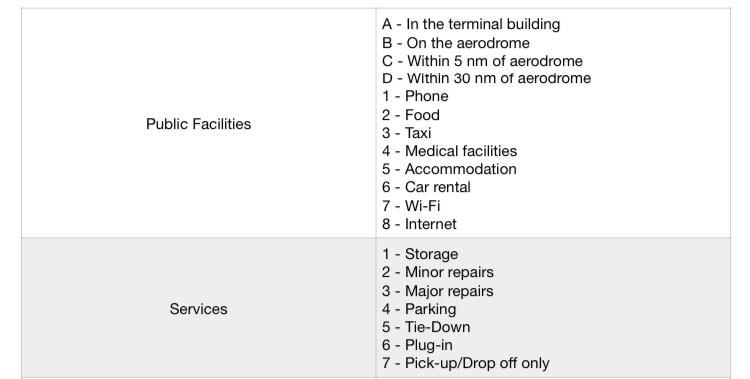
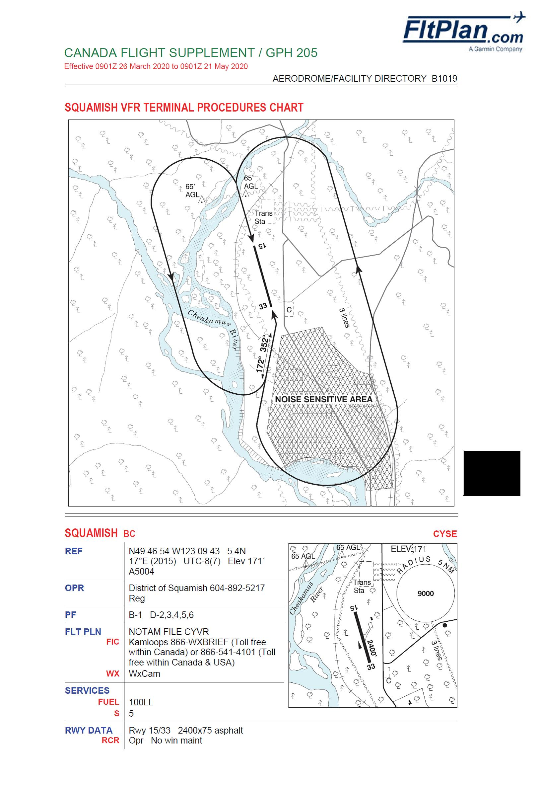
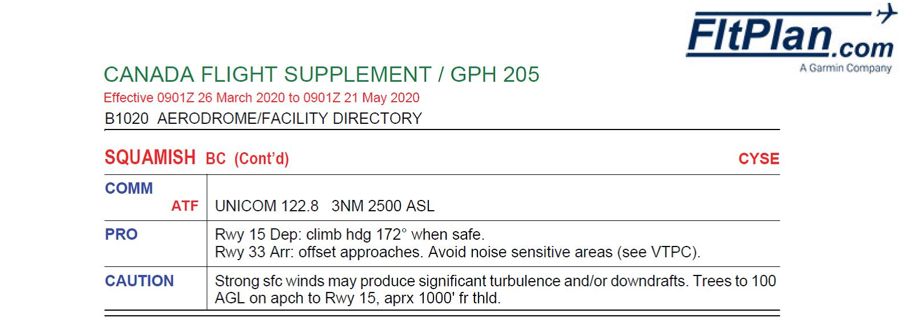

What kind of airspace are we in?
(review Airspace)
What frequencies should we use?
125.5 CZBB ATIS
124.3 CZBB Ground
118.1 CZBB Inner Tower
127.6 CZBB Outer Tower
126.3 Pitt Meadows Tower
122.72 Pitt Lake Traffic
125.2 Vancouver Terminal
122.8 Squamish Traffic
126.7 VFR Enroute frequency in uncontrolled airspace
122.7 Whistler
123.2 Pemberton Traffic
126.7 VFR Enroute frequency in uncontrolled airspace
134.4 Vancouver Centre
125.2 Vancouver Terminal
125.65 Vancouver Tower
125.5 CZBB ATIS
127.6 CZBB Outer Tower
118.1 CZBB Inner Tower
124.3 CZBB Ground (close the flight plan!)
Radio Navigation:
The student should be aware of the available and serviceable radio navigation aids onboard the aircraft flown and how to operate them correctly
113.7 YYJ VOR (to check VOR on the ground at CZBB)
115.9 YVR VOR
112.4 YPK VOR
Turn and climb Techniques:
Slipping Turns: review procedures
Shuttle Descent/Climb: (when to use? If there are surrounding terrains and you want to climb high)
Enroute climb in valley: the student should be advised on how to execute a safe prolonged climb and practice levelling off intermittently to manage engine oil temperature and avoid traffic and terrain
Student should be able to calculate both takeoff and landing distance at CYSE and CYPS
Short field takeoff and Landing with obstacle:
Review short field takeoff and landing techniques (i.e., approach speed, flap setting, touchdown point etc.,)
Procedures:
CZBB – Pitt Lake
Pitt Lake - CYSE
From Pitt Lake, start climbing to 6500' until Goose Island then 8500’ or higher (caution limited oxygen above 10,000’)
Monitor Vancouver Terminal 125.2 until Pinecone Lake
Select Top of Descent Point where you start descending to join (circuit height + 500’) to check active runway at CYSE (ex., after Pinecone Lake, start descending to 1700’ until CYSE)
Cross midfield and check the windsock, if active runway is found, loose altitude to circuit height in upwind side
Make 5 uncontrolled airport mandatory calls!
CYSE – CYPS
Follow river or highway to CYPS (altitude at student's discretion)
When departing from CYSE, mind the noise sensitive area
Select Top of Descent point to descend until circuit height
Stay South of the river and cross midfield from the South (upwind side) at 1700'
check the windsock, if active runway is found, join downwind
Make 5 uncontrolled airport mandatory calls!
CYPS – Lillooet Lake
Keep climbing until 9500' towards South end of the lake
Turn direct to Pitt Lake
Pitt Lake - CZBB
Airports:

CYSE – Squamish (Noise abatement area and circuit pattern


CYPS – Pemberton (be careful of hang gliding and paradrop activities)